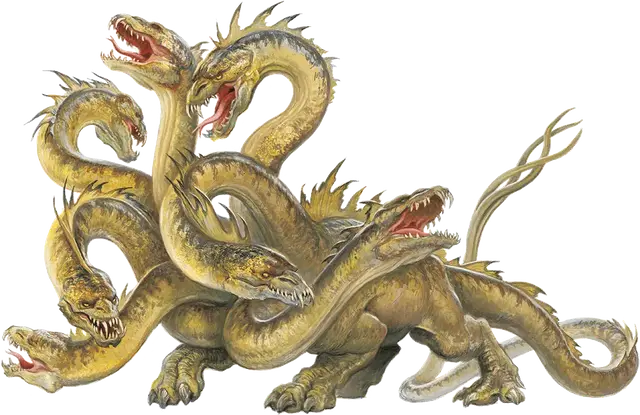

Гидра
Hydra
Огромный Монстр, без мировоззрения

Класс Доспеха 15 (природный доспех)
Хиты 172 (15к12 + 75)
Скорость 30 футов, плавая 30 футов
| мод | спас | ||
|---|---|---|---|
| СИЛ | 20 | +5 | +5 |
| ЛОВ | 12 | +1 | +1 |
| ТЕЛ | 20 | +5 | +5 |
| мод | спас | ||
|---|---|---|---|
| ИНТ | 2 | −4 | −4 |
| МДР | 10 | +0 | +0 |
| ХАР | 7 | −2 | −2 |
Навыки Восприятие +6
Чувства тёмное зрение 60 футов, пассивное Восприятие 16
Опасность 8 (3900 опыта)
Бонус мастерства +3
Среда обитания Болото
Особенности
Задержка дыхания. Гидра может задержать дыхание на 1 час.
Многочисленные головы. У гидры пять голов. Пока у гидры больше одной головы, она совершает с преимуществом спасброски от испуга, глухоты, лишения сознания, ослепления, очарования и ошеломления.
Если гидра за один ход получает урон 25 или больше, одна из её голов умирает. Если умрут все головы, умирает и гидра.
В конце своего хода она отращивает по две головы за каждую умершую голову с конца её предыдущего хода, если только она не получала за этот период урон огнём. За каждую отращенную голову гидра восстанавливает по 10 хитов.
Реагирующие головы. За каждую голову после первой гидра получает дополнительную реакцию, которую можно использовать только для совершения провоцированных атак.
Неусыпный. Пока гидра спит, как минимум одна её голова бодрствует.
Действия
Мультиатака. Гидра совершает столько атак укусом, сколько голов у неё есть.
Укус. Рукопашная атака оружием: +8 к попаданию, досягаемость 10 футов, одна цель. Попадание: Колющий урон 10 (1к10 + 5).
Описание
Гидра это ужасная рептилия с телом крокодила и несколькими головами на длинных змеиных шеях. Хоть головы и можно отрубить, гидра магическим образом их очень быстро отращивает. У типичного представителя этого вида пять голов.
На заре времен Тиамат, Королева Злых Драконов, убила конкурирующее божество по имени Лернея, и рассеяла её кровь по мультивселенной. Каждая упавшая на землю капля породила многоголовую гидру, мучимую таким же сильным голодом, как ненависть павшего божества. Великие герои не раз испытывали свою силу в бою с такими существами.
Неутолимый голод. Чревоугодливая и прожорливая гидра хватает и рвет свою жертву на части в припадке жора. Когда гидра зачистит всю округу от съедобных обитателей и прогонит прочь существ, достаточно умных, чтобы её сторониться, она уходит искать еду куда-нибудь ещё. Голод гидры настолько велик, что она никогда не наедается, её головы от голода даже могут начать нападать друг на друга, и таким образом существо может начать есть само себя живьем.
Водные обитатели. Гидры — природные пловцы, обитающие в реках, у побережья озер, на мелководьях в океане и даже в болотах. Гидре обычно не требуется убежище от стихий, поэтому и логова она не устраивает. Только в холодном климате гидры бывают вынуждены искать пристанища в пещерах или руинах.
Когда гидра спит, как минимум одна её голова бодрствует, так что это существо очень сложно застать врасплох.